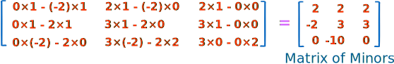
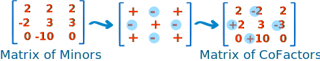
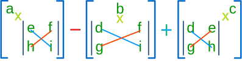

Inverse of a Matrix
using Minors, Cofactors and Adjugate
Note: also check out Matrix Inverse by Row Operations and the Matrix Calculator
We can calculate the Inverse of a Matrix by:
- Step 1: calculating the Matrix of Minors,
- Step 2: then turn that into the Matrix of Cofactors,
- Step 3: then the Adjugate, and
- Step 4: multiply that by 1/Determinant.
But it is best explained by working through an example!
Example: find the Inverse of A:
It needs 4 steps. It is all simple arithmetic but there is a lot of it, so try not to make a mistake!
Step 1: Matrix of Minors
The first step is to create a "Matrix of Minors". This step has the most calculations.
For each element of the matrix:
- ignore the values on the current row and column
- calculate the determinant of the remaining values
Put those determinants into a matrix (the "Matrix of Minors")
Determinant
For a 2×2 matrix (2 rows and 2 columns) the determinant is easy: ad-bc
|
Think of a cross:
|
 |
(It gets harder for a 3×3 matrix, etc)
The Calculations
Here are the first two, and last two, calculations of the "Matrix of Minors" (notice how I ignore the values in the current row and columns, and calculate the determinant using the remaining values):

And here is the calculation for the whole matrix:

Step 2: Matrix of Cofactors
This is easy! Just apply a "checkerboard" of minuses to the "Matrix of Minors". In other words, we need to change the sign of alternate cells, like this:

Step 3: Adjugate (also called Adjoint)
Now "Transpose" all elements of the previous matrix... in other words swap their positions over the diagonal (the diagonal stays the same):

Step 4: Multiply by 1/Determinant
Now find the determinant of the original matrix. This isn't too hard, because we already calculated the determinants of the smaller parts when we did "Matrix of Minors".

Using:
Elements of top row: 3, 0, 2
Minors for top row: 2, 2, 2
We end up with this calculation:
Determinant = 3×2 − 0×2 + 2×2 = 10
Note: a small simplification is to multiply by the cofactors (which already have the "+−+−" pattern), and then we just add each time:
Determinant = 3×2 + 0×(−2) + 2×2 = 10
Your Turn: try this for any other row or column, you should also get 10.
Now we multiply the Adjugate by 1/Determinant to get:

And we are done!
Compare this answer with the one we got on Inverse of a Matrix using Elementary Row Operations. Is it the same? Which method do you prefer?
Larger Matrices
It is exactly the same steps for larger matrices (such as a 4×4, 5×5, etc), but wow! there is a lot of calculation involved.
For a 4×4 Matrix we have to calculate 16 3×3 determinants. So it is often easier to use computers (such as the Matrix Calculator.)
Conclusion
- For each element, calculate the determinant of the values not on the row or column, to make the Matrix of Minors
- Apply a checkerboard of minuses to make the Matrix of Cofactors
- Transpose to make the Adjugate
- Multiply by 1/Determinant to make the Inverse